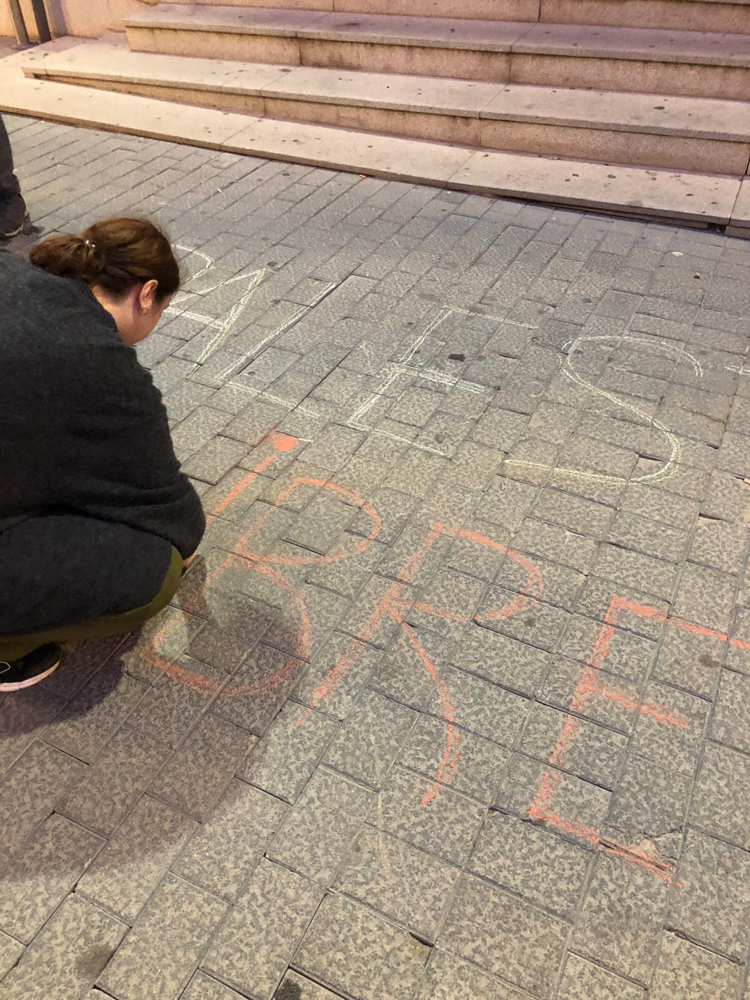

Campo de Criptana con Palestina

Más de un centenar de vecinas y vecinos de Campo de Criptana se concentraron el pasado sábado 11 frente a las puertas del Ayuntamiento de Criptana donde colgaba una pancarta con el lema “Campo de Criptana con Palestina. STOP Genocidio”. Los asistentes respondían a la convocatoria del Foro Social de Campo de Criptana en solidaridad con el pueblo palestino para denunciar de la masacre de Gaza y exigir a nuestros gobernantes más presión internacional al gobierno israelí.
Desde el Foro Social se celebraba la noticia del principio de acuerdo de Paz entre Hamás y el gobierno israelí, que de momento, supone el fin de los ataques israelíes, permitiendo a los gazatíes volver a sus territorios. Sin embargo, mostraban su escepticismo a que se trate de un alto el fuego duradero y a que Israel cumpla todos los puntos del acuerdo, como la retirada de sus tropas de territorios palestinos, como ya ocurrió con los acuerdos previos. Por este motivo, durante el acto hicieron un llamamiento a que la sociedad civil de todo el mundo siga movilizada y presionando para que este acuerdo se cumpla y de lugar a una Paz real y duradera. Igualmente exigían al gobierno español el embargo de armas a Israel y la ruptura de relaciones comerciales hasta que no haya pruebas evidentes de que Israel cumpla este acuerdo. La verdadera Paz no llegará hasta que se resarza a las víctimas y se enjuicie a los responsables de esta masacre.
Por otro lado, recordaron también que la franja de Gaza está ahora completamente devastada, siendo prácticamente imposible sostener la vida en este territorio, de manera que va a hacer falta mucha ayuda internacional para que el pueblo palestino pueda reconstruir sus hogares, sus servicios públicos, su sector primario y sus industrias. Por ello hacían también un llamamiento los gobiernos para que aprueben partidas presupuestarias destinadas a la ayuda humanitaria y a la reconstrucción de Gaza. Estas ayudas deben ser gestionadas y canalizadas por medio de las agencias de cooperación como la UNRWA, la Agencia de Naciones Unidas para la población refugiada de Palestina en Oriente Próximo. Al mismo tiempo hacían un llamamiento a todas y todos los criptanenses a hacerse socios de esta agencia y a colaborar económicamente con ella mediante donaciones, demostrando, una vez más, la solidaridad de Campo de Criptana con los que sufren.
En el acto se leyeron también varias poesías de autoras y autores palestinos, algunos de ellos, asesinados por el ejército israelí como Refaat Alareer, Hiba Kamal Abu Nada o el reciente premio Pulitzer Mosab Abu Toha. Más abajo reproducimos estas poesías que dieron al acto un carácter más emotivo y esperanzador.
El acto terminó con los manifestantes coreando al unísono ¡Viva Palestina libre!

Poesía palestina
¿Qué es hogar?
Poesía de Mosab Abu Toha, poeta, académico y editor palestino, ganador del premio pulitzer en 2025.
Qué es hogar:
Es la sombra de los árboles cuando iba a la escuela antes de que los arrancaran de raíz.
Es la fotografía en blanco y negro de la boda de mis abuelos antes de derrumbarse las paredes.
Es la alfombra de oración de mi tío donde dormitaban decenas de hormigas en invierno antes de que fuera saqueada para colocarla en un museo.
Es el horno que mi madre usaba para hornear el pan y asar el pollo antes de que una bomba calcinara nuestra casa.
Es el café donde miraba partidos de fútbol y jugaba—
Mi hijo me detiene: ¿Puede una palabra de cinco letras encerrar todo esto?
Si debo morir
Poesía de Refaat Alareer, poeta, profesor y traductor palestino, que fue asesinado por el ejército de Israel el 6 de diciembre el año pasado en un ataque aéreo contra su casa en el que también murieron su hermano Salah, con su hijo Mohammed, y su hermana Asmaa con tres de sus hijos.
Si debo morir,
debes vivir
para contar mi historia
vender mis cosas
comprar un trozo de tela
y algunas cuerdas,
(hazlo blanco con una cola larga)
para que un niño, en algún lugar de Gaza,
mientras mira el cielo a los ojos
esperando a su padre que se fue en llamas
y no se despidió de nadie,
ni siquiera para sí mismo,
vea la cometa, mi cometa que hiciste, volando arriba
y piense por un momento que hay un ángel allí
trayendo de vuelta el amor.
Si debo morir
deja que traiga esperanza
deja que sea un cuento.
La noche en la ciudad
Poesía de Hiba Kamal Abu Nada, poeta, novelista, bioquímica, nutricionista, activista feminista que fue asesinada el 20 de octubre de 2023, a la edad de 32 años, en su casa de Jan Yunis, en la franja de Gaza.
La noche en la ciudad es oscura,
excepto por el brillo de los misiles;
silenciosa, excepto por el sonido
del bombardeo;
aterradora, excepto por la promesa
tranquilizadora de la oración;
negra, excepto por la luz de los mártires.
Buenas noches.
Olivos de resistencia
Samah Abu Naam es representante de la Unión de Comités de Trabajo Agrícola (UAWC) de Palestina. Como presidenta de una cooperativa de mujeres, Samah trabaja en la producción de alimentos ecológicos junto con diecisiete mujeres más, con quienes desarrolla labores de sensibilización, formación y ofrece recursos y herramientas para que las palestinas puedan incorporarse al mundo laboral a pesar de la ocupación.
Permaneceremos firmes en nuestra tierra como las raíces del olivo en la tierra. Y nuestras ramas seguirán tocando el cielo para alcanzar la libertad.
Amamos esta época del año, el tiempo de la cosecha del olivo. En Palestina, este árbol milenario es símbolo de vida, resistencia y cultura. Aquí, también nos acompaña como guardián de nuestra tierra y memoria.
Sin embargo, en Palestina, la temporada de la aceituna se vive con dolor. Las agresiones contra campesinos y campesinas intentan arrancar lo que el pueblo ha sembrado con amor y cuidado.
Al unir nuestras voces y corazones, tejemos un puente de solidaridad. Porque el olivo que crece en Palestina también late en nuestra tierra.
Foro Social de Campo de Criptana
Por una democracia más participativa
El Foro Social de Campo de Criptana es un espacio socio-político de participación ciudadana, abierto, horizontal y no partidario que trabaja por una democracia más participativa principalmente a nivel municipal, pero también global.